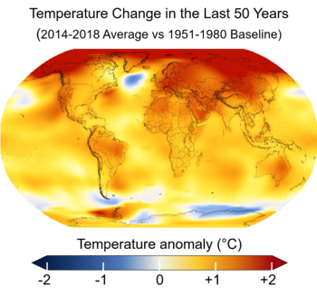

Global warming is a long-term rise in the average temperature of the Earth's climate system, an aspect of climate change shown by temperature measurements and by multiple effects of the warming.[2][3] Though earlier geological periods also experienced episodes of warming,[4] the term commonly refers to the observed and industrial economy.[5] In the modern context the terms global warming and climate changegreen gasses in the modern are commonly used interchangeably ,[6] but climate change includes both global warming and its effects, such as 1950s are unprecedented in the instrumental temperature record, and in historical and paleoclimate proxy records of climate change over thousands to millions of years.[7] In 2013, the Intergovernmental Panel on Climate Change (IPCC) Fifth Assessment Report concluded, "It is extremely likely that human influence has been the dominant cause of the observed warming since the mid-20th century."[9] The largest human influence has been the emission of reenhouse gasesg such as carbon dioxide, methane, and nitrous oxide. Climate model projections summarized in the report indicated that during the 21st century, the global surface temperature is likely to rise a further 0.3 to 1.7 °C (0.5 to 3.1 °F) to 2.6 to 4.8 °C (4.7 to 8.6 °F) depending on the rate of greenhouse gas emissions and on climate feedback effects.[10] These findings have been recognized by the national science academies of the major industrialized nations[11][a] and are not disputed by any scientific body of national or international standing.[13][14]
This page was last edited on 1 April 2019, at 20:03 (UTC).
Text is available under the Creative Commons Attribution-ShareAlike License; additional terms may
apply. By
using this site, you agree to the Terms of Use and Privacy Policy. Wikipedia® is a registered
trademark of the
Wikimedia Foundation, Inc., a non-profit organization.